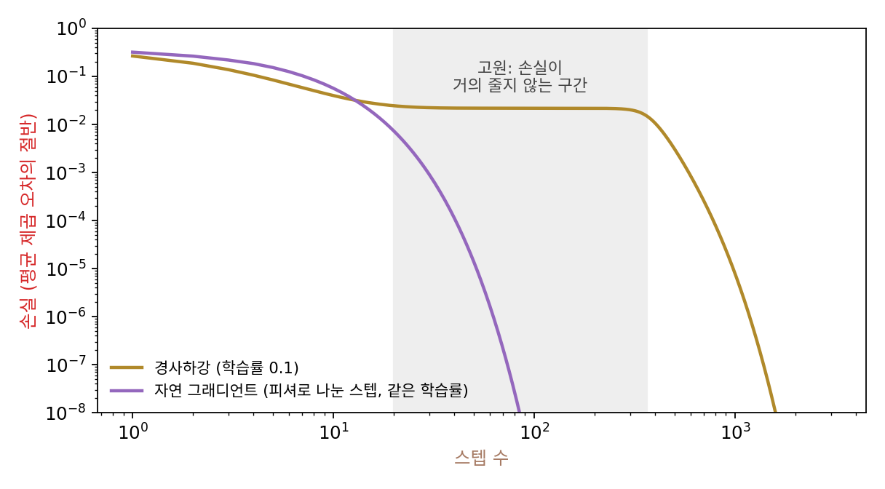
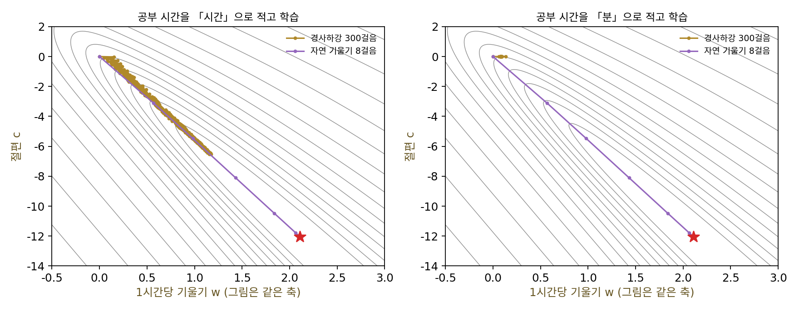
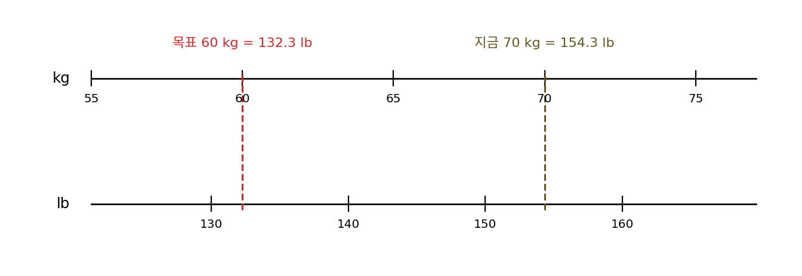
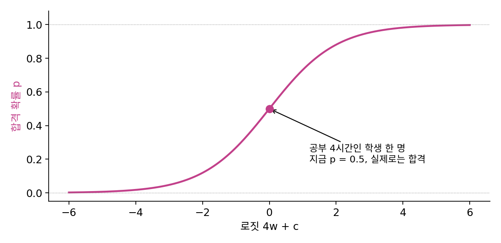
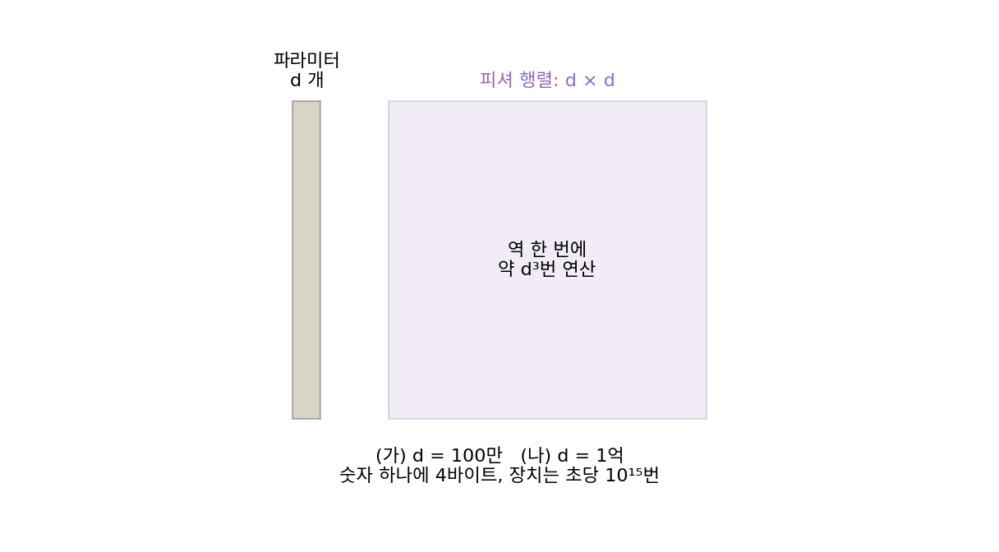

자연 그래디언트: 피셔 행렬로 나눈 스텝
가우스–뉴턴은 잔차를 제곱해 더한 손실에서만 바로 쓸 수 있었는데, 신경망이 가장 많이 푸는 일은 분류이고 그 손실은 정답에 준 확률의 로그다. 모델이 내놓는 것이 숫자 하나가 아니라 확률분포일 때, 곡률 대신 무엇으로 스텝을 나눠야 할까? 그리고 그것으로 나누면 무엇이 좋아질까?
역사: 평평한 고원에서 멈추는 역전파
다층 퍼셉트론을 역전파로 학습시키면 손실이 한동안 거의 줄지 않는 「고원(plateau)」이 나타나곤 했다. 일본의 아마리 슌이치(甘利俊一, Shun-ichi Amari)가 눈여겨본 것은 파라미터 공간의 좌표였다. 파라미터의 한 칸이 모델이 내놓는 분포를 얼마나 바꾸는지는 자리마다 다른데, 보통의 그래디언트는 모든 칸을 같은 길이로 본다. 그는 1998년 『뉴럴 컴퓨테이션』에 실은 「자연 그래디언트는 학습에서 효율적으로 작동한다」에서, 파라미터 공간에 구조가 있으면 보통의 그래디언트는 가장 가파른 방향이 아니며 자연 그래디언트가 그 방향이라고 적었다. 그리고 자연 그래디언트로 하는 온라인 학습이 데이터를 모두 모아 한꺼번에 추정하는 것과 같은 효율에 점근적으로 이르고, 역전파의 고원 문제도 덜 심해질 수 있다고 했다. 분포를 고칠 때 피셔 행렬의 역을 곱한 그래디언트로 걸어 탐색 분포의 폭에 맞는 스텝을 얻었던 자연 진화 전략도, 같은 생각을 탐색 분포에 쓴 것이다.


손실이 한동안 안 줄면 학습률을 키우면 되지 않아요? 요즘은 Adam 을 쓰면 되고요.

아마리가 본 것은 학습률 하나로는 못 고치는 문제였어요. 파라미터 한 칸을 옮길 때 분포가 바뀌는 정도가 자리마다 다르다고 했죠. 모든 칸에 같은 학습률을 곱하면 어떻게 될까요?

음, 분포가 많이 바뀌는 칸에 맞춰 학습률을 작게 잡으면, 거의 안 바뀌는 칸은 제자리걸음이겠네요. 반대로 맞추면 많이 바뀌는 칸이 튀고요.

그래서 칸마다 「분포가 얼마나 바뀌나」로 잰 다른 눈금을 대자는 거예요. 그 눈금이 피셔 행렬이에요. 그런데 다층 퍼셉트론의 파라미터가 1,000개면 피셔 행렬은 몇 칸일까요?

1,000 × 1,000이면 100만 칸이요. 그걸 스텝마다 역으로… 방향이 옳다는 걸 알아도 그대로 계산하기는 어렵겠네요.

그럼 파라미터가 둘뿐인 모델부터 보면 어때요? 피셔가 2 × 2면 손으로도 역을 구할 수 있으니까, 자연 그래디언트가 경사하강과 무엇이 다른지 먼저 볼 수 있잖아요.
공부 시간으로 합격을 맞히기
학생 30명의 공부 시간 h와 합격 여부를 모았다(씨앗을 고정한 이 책의 예). 합격 확률을 p = σ(wh + c)로 두는 로지스틱 회귀를 고른 것은, 파라미터가 기울기 w와 절편 c 둘뿐이라 길을 그림으로 볼 수 있고 손실이 볼록이라 바닥이 하나이기 때문이다. 손실 f는 정답에 준 확률의 로그를 뺀 값의 평균이다.
이 모델에서 파라미터를 조금 바꾸면 내놓는 분포가 얼마나 바뀌는지는 학생마다 p(1 − p)에 입력을 두 번 곱한 값으로 정해진다. 학생마다 구한 p(1 − p)·[h, 1][h, 1]ᵀ을 평균한 행렬이 피셔 행렬 F이고, 그래디언트를 F로 나눈 스텝을 내딛는다.
정답을 데이터가 아니라 모델이 내놓은 분포에서 뽑는다는 것이 눈여겨볼 곳으로, 그래서 F는 정답과 상관없이 모델만으로 정해진다. 이렇게 그래디언트에 피셔 행렬의 역을 곱해 걷는 방법을 자연 그래디언트 (분포의 변화로 잰 가장 가파른 방향 / natural gradient)라 한다. 로지스틱 회귀에서는 F가 헤시안과 칸마다 같다(스크립트에서 수치 미분으로 확인했다). 소프트맥스와 크로스 엔트로피처럼 출력과 손실이 맞물린 경우에는 피셔 행렬이 일반화된 가우스–뉴턴 행렬과 같다는 것을 마턴스가 2020년의 정리 논문에서 보였다. 제곱 오차에는 가우스–뉴턴, 확률로 정한 손실에는 피셔, 둘은 뉴턴법에서 헤시안이 하던 일을 맡는 행렬이다.
숫자로 보자. 원점에서 출발해 손실이 바닥과 0.000001 안으로 차이 나기까지, 경사하강(충분히 줄 때까지 스텝 크기를 반씩 줄임)은 4,162스텝, 자연 그래디언트는 6스텝이다. 이번에는 같은 데이터의 공부 시간을 「분」으로 적어 보자. 모델이 뜻하는 것은 하나도 바뀌지 않았다. 그런데 경사하강은 20만 스텝 뒤에도 바닥에 닿지 못하고, 자연 그래디언트는 시간으로 적을 때와 똑같이 6스텝이다. 최소점에서 잰 피셔 행렬의 조건수가 1,597에서 543만으로 뛰었는데도 자연 그래디언트가 지나는 자리들은 시간으로 적을 때와 같다.

ML에서: 왜 큰 모델은 피셔를 그대로 쓰지 않나
자연 그래디언트는 좌표를 어떻게 적든 같은 길로 간다는 장점이 있지만, 피셔 행렬은 헤시안과 크기가 같다. 파라미터가 1억 개면 칸이 10¹⁶개이고, 역을 구하는 데 드는 연산은 대략 파라미터 수의 세제곱이다. 그래서 신경망에서 자연 그래디언트를 쓰려는 시도는 모두 「피셔 행렬을 어떻게 값싸게 근사하나」로 모였다. Adam 처럼 대각선만 남기는 것이 가장 값싼 끝이고, 그보다 많이 남기되 여전히 다룰 수 있는 구조를 찾는 것이 이 장의 나머지 두 개념이다.
문제 7. 킬로그램과 파운드
지금 몸무게 70 kg, 목표 60 kg이다. 불편함을 ½(지금 − 목표)²(킬로그램으로 잼)으로 두고, 앱이 매주 「앱에 보이는 숫자의 그래디언트 × 0.1」만큼 목표를 낮춘다. (가) 앱이 킬로그램으로 보여 주면 첫 주에 몇 kg을 빼라고 하는가? (나) 같은 앱을 파운드(1 kg = 2.2046 lb)로 바꾸면? 그래디언트는 파운드 숫자에 대해 다시 잰다. (다) 그래디언트를 그 단위에서 잰 곡률로 나누면 두 앱의 권고가 같아지는가?

(가)는 그래디언트 10, 0.1 × 10 = 1 kg이에요.
(나)에서 파운드 숫자를 1 늘리면 킬로그램으로는 얼마가 늘죠? 그럼 불편함의 그래디언트는요?
1 lb는 1/2.2046 kg이니, 불편함의 그래디언트도 10/2.2046 = 4.536이에요. 0.1을 곱하면 0.4536 lb. 킬로그램으로 바꾸면 0.2057 kg이요.
1 kg의 4.86분의 1이네. 4.86이면 2.2046을 한 번 나눈 것보다 커. 아, 2.2046² = 4.860이구나.
왜 두 번 나누어졌을까요?
그래디언트에서 한 번, 스텝을 다시 킬로그램으로 바꿀 때 한 번이요. 그래디언트는 「1단위 움직이면 얼마나 바뀌나」라서 단위를 따라 바뀌는데, 스텝은 그 반대 방향으로 바뀌어야 하거든요.
(다)는요? 곡률은 파운드로 재면 얼마죠?

곡률은 그래디언트를 한 번 더 미분한 거니까… 2.2046이 한 번 더 나누어지겠네요. 킬로그램으로 1이던 곡률이 파운드로는 1/2.2046²이요.

4.536을 그걸로 나누면 22.046, 0.1을 곱하면 2.2046 lb = 1 kg. 같아졌어요. 곡률로 나누면 단위가 지워져요. 미분에서 변수를 바꾸면 dx 앞에 배율이 붙는데, 곡률이 그 배율의 제곱을 알아서 갚아 주는 거네요.

같은 몸무게를 두고 앱이 나라마다 다른 권고를 하면 이상하잖아요. 경사하강은 그런 앱이었고, 곡률로 나누면 그게 사라지는 거네요.
문제 8. 학생 한 명뿐인 피셔
공부 시간 4시간인 학생 한 명의 자료로 로지스틱 회귀를 하는데, 지금 파라미터에서 이 학생의 합격 확률은 p = 0.5이고, 실제로 합격했다. (가) 이 학생 하나로 만든 피셔 행렬 F = p(1 − p)·[4, 1][4, 1]ᵀ와 그 고윳값을 구하라. 역행렬이 있는가? (나) 대각선에 작은 값 ε을 더해 (F + ε·I)⁻¹을 곱하면 ε = 0.1, 0.001에서 스텝은 어떻게 되는가? 학습률 1로 걸으면 로짓 w·4 + c는 얼마나 바뀌는가? (다) 그래디언트 그대로 학습률 1로 걸으면 로짓은 얼마나 바뀌는가?

(가) F = 0.25 × [[16, 4], [4, 1]] = [[4, 1], [1, 0.25]]. 행렬식이 4 × 0.25 − 1 = 0이라 역이 없어. 고윳값은 0과 4.25.
학생 한 명은 로짓 하나만 알려 줘요. 파라미터 둘 가운데 로짓을 바꾸지 않는 방향이 있나요?
로짓이 4w + c니까… w를 1 늘리고 c를 4 줄이면 그대로예요.
그 방향으로 움직이면 이 학생의 합격 확률은요?

하나도 안 바뀌어요. 분포가 안 바뀌니까 그 방향의 피셔가 0이고, 그게 고윳값 0이네요. 이 학생 하나로는 그 방향을 정할 근거가 없어요.

(나)는 그래디언트가 (p − 1)·[4, 1] = [−2, −0.5]예요. ε = 0.1이면 (F + ε·I)⁻¹ × 그래디언트가 [−0.4598, −0.1149]이고, 스텝은 그 반대쪽이라 로짓이 1.954 늘어요. ε = 0.001이면 [−0.4705, −0.1176], 로짓은 1.9995 늘고요. ε을 줄여도 스텝이 터지지 않고 한 값으로 모여요.
ε이 0으로 가면 로짓 변화가 정확히 2로 가. 분포가 바뀌지 않는 방향에는 움직이지 않고, 로짓을 바꾸는 방향으로만 「한 스텝에 로짓 2만큼」 가는 거야. (다)는 그래디언트 그대로면 로짓이 8.5나 바뀌어.

실제 구현이 피셔에 작은 값을 더해 역을 구하는 것도 그래서예요. 데이터가 정하지 못하는 방향은 거의 움직이지 않게 묶어 두는 거죠.
문제 9. 피셔를 그대로 쓰면 드는 값
32비트 실수로 계산하고, d × d 행렬의 역을 구하는 데 연산이 대략 d³번 든다고 하자. 초당 10¹⁵번 연산하는 장치가 있다. (가) 파라미터 100만 개인 모델의 피셔 행렬을 저장하는 데 드는 바이트와, 역을 한 번 구하는 데 걸리는 시간은? (나) 1억 개이면? (다) 학습이 보통 수십만 스텝이라면 무엇이 불가능한가?

100만 개면 칸이 10¹², 4 × 10¹²바이트, 4테라바이트예요. 역은 10¹⁸번이라 1,000초, 17분쯤이요.
한 스텝에 17분이면 기다려 볼 만할까요? 학습 전체는 얼마죠?
10만 스텝이면 1억 초… 3년이 넘어요. 그리고 1억 개면 저장이 4 × 10¹⁶바이트, 역 한 번에 10⁹초, 31.7년이요. 한 스텝에 31년.
파라미터가 100배 늘면 저장은 1만 배, 시간은 100만 배야. 제곱과 세제곱이라 모델이 클수록 더 빨리 불가능해져. 피셔를 「정확히」 쓰는 건 처음부터 답이 아니고, 어떤 구조를 남기고 어떤 걸 버릴지 고르는 문제가 되네.
반 친구 30명 사이의 사이좋음을 다 적으려면 435칸인데, 전교생 1,000명이면 50만 칸이라 아무도 안 적어요. 파라미터 짝마다 한 칸인 피셔도 그래서 대신 「반끼리」처럼 묶어서 적겠죠.